2026
untitled
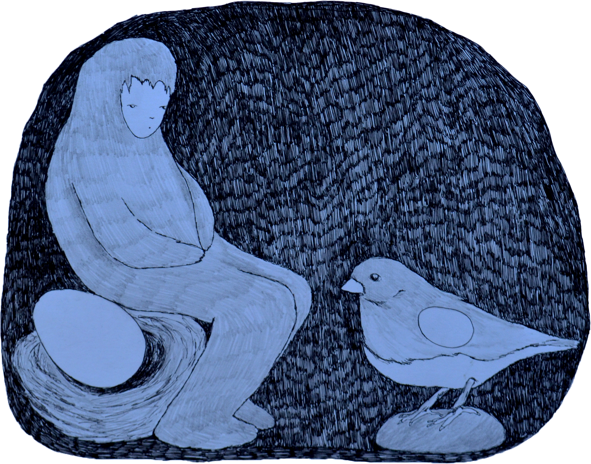
“My deepest impulses are optimistic, an attitude that seems to me as spiritually necessary and proper as it is intellectually suspect.”
wren verga is a multidisciplinary artist and art teacher living in Brooklyn, NY.
I think a lot about things that are nondescript and uncategorizable. As soon as I feel like something is recognizable, I desire it to be blurred somehow. It feels more true to Truth when it is non graspable. I am interested in things that look not how they are supposed to look. Untouchable worlds take their respective homes in the everyday, and I try to find that through painting, drawing, video, and print. Like childhood dreamscapes that exist in tandem with the morning bowl of breakfast cereal, sitting opposite an invisible friend with a timely and important message, the homespun/ordinary/simple life often collides with all that is unearthly and beyond belief. The swing of a bird, the holding of a hand, the open car window, loose words that hang in the air~ all plain, all fantastical in their own right.
2026
untitled

“My deepest impulses are optimistic, an attitude that seems to me as spiritually necessary and proper as it is intellectually suspect.”
★
march 03 2026
untitled
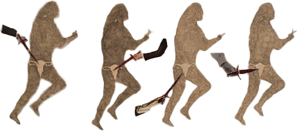
★
I am in the coolest grass that I could think of
Long and warm and without sunshine
I feel a light
And I cartwheel through my phone
Looking at you
And in some TV magic
I feel closer.
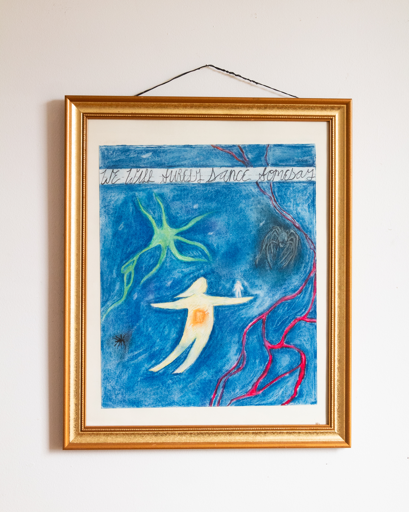
★
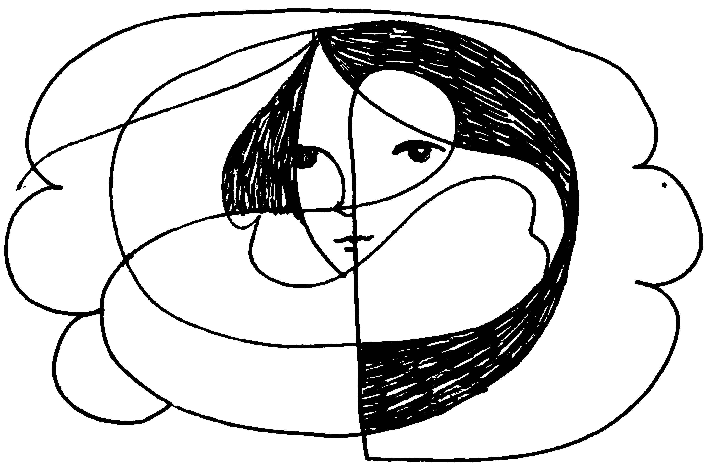
I smelled apple cider cinnamon on my bike ride
Like grandma’s potpourri
I wonder if she knew she had a smell
Like hyacinths and cinnamon
My grandma is hyacinths and cinnamon now
Still I know where she stands at my side
Knocks at my door
Wondering why I haven’t drawn the shades today
Or drawn the flower that holds my eye
She knocks and wonders why she still has to knock at all
I open my door for a while
But only for spring
And those who smell of hyacinths and apple cider cinnamon.
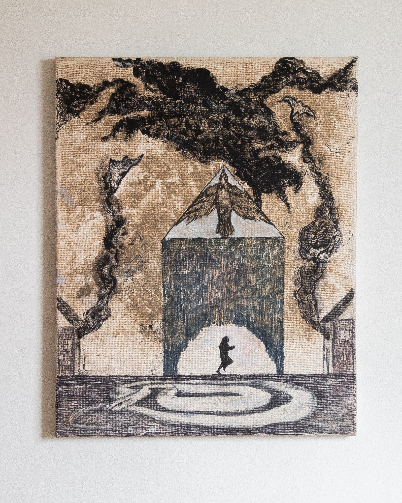
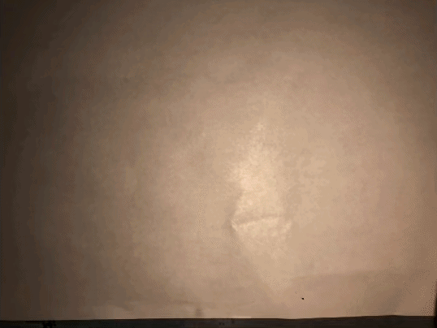
★
Meet me at my harbor
Take me for a swim
Soft and warm
River atop my head
Sink me under, hold me down
I will breathe in
Fizzles in my nose
Drops down my neck
And bring me back up
And now I’ll breathe fresh
And now I’ll breathe birds
And cocoon in my curled shell
I’ll stay
Soft and warm
Until I call you to my harbor once again.
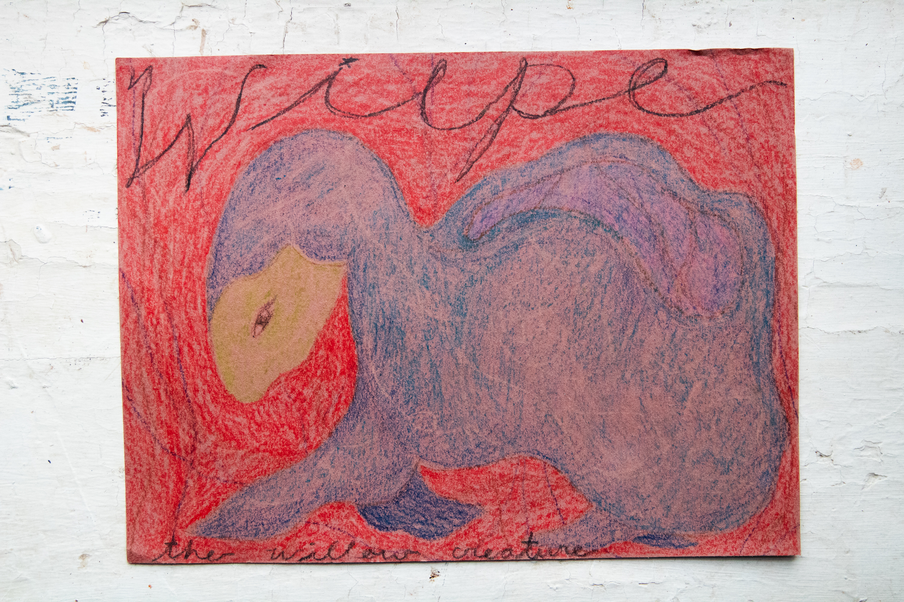
★
a promise poem:
Splendid! Wonderful!
Call me in for a time
I will make promises
And continue to see them
Over long stretches of sea
Soon they will fade
To ships in the night
Crossing where I once held them dear
And on on on into a new night
I remember we are of no permanence
2022
Reborn
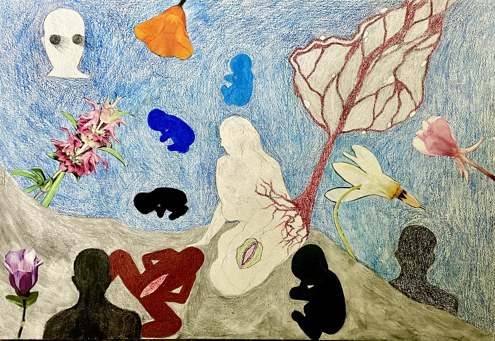
★
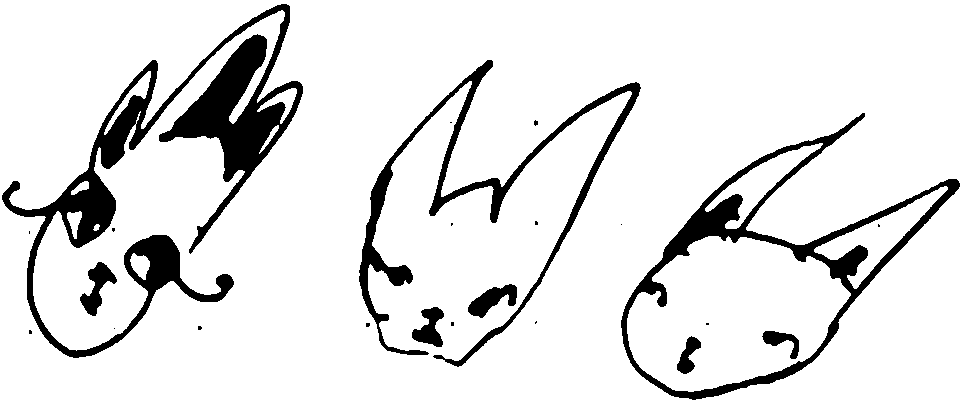
Fantasy is protection
from desolation of the spirit
And just as it all seems too mundane for life
A ladybug crosses your path
And you remember all that is wonderous
Is ordinary, too.
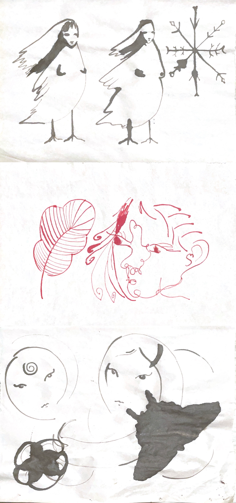
★
You were right to be joyful
Loneliness can be friendly, too.
It's you!
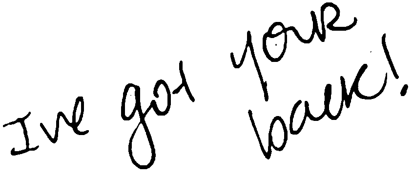
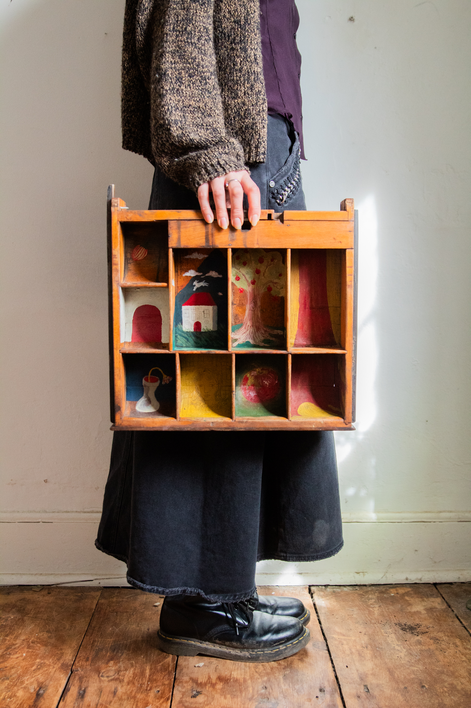